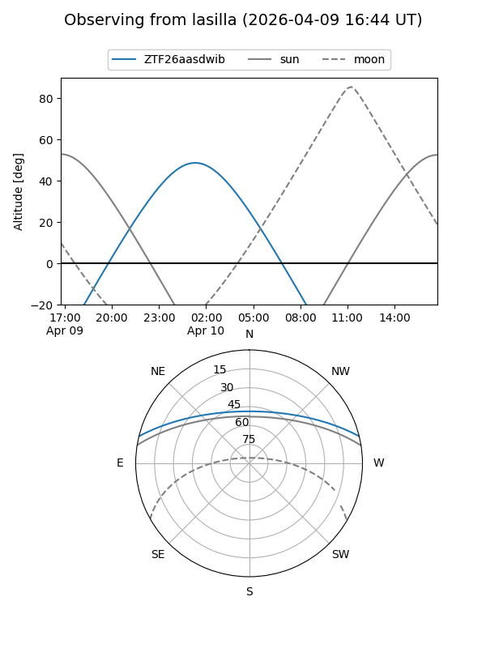
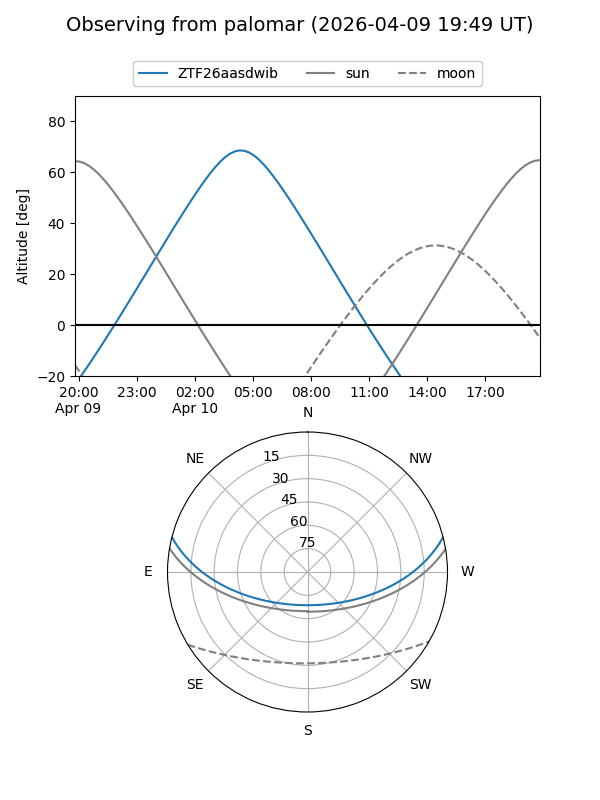

ZTF26aasdwib
Target ZTF26aasdwib at 2026-04-10 06:00
Aliases and brokers:
FINK: link
Lasair: link
ALeRCE: link
alt names
ZTF26aasdwib (ztf,fink_ztf)
Coordinates:
equatorial (ra, dec) = 146.7031,+12.11795
equatorial (HMS+DMS) = 09:46:48.73,+12:07:04.61
galactic (l, b) = (222.7465,+44.30462)
Flags:
Photometry:
last ztfg=16.45
1 ztfg detections
Lightcurve
Visibility


Additional plots